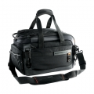

不论是拍摄照片还是录像,阔影者41摄影包具备独特的设计能够充分满足您在拍摄过程中寻求的专业效果。阔影者41单肩包具有快速存取主开口，只需简单拉动拉链手柄，即可在旅途中快速取出装备。该款时尚单肩包拥有较大的内部空间，并带有保护材料，可容纳一台全尺寸的数码摄影机或一台专业数码单反相机。采用创新的内部隔板系统，可方便调整，以容纳摄影或摄像装备，是一款二合一摄影包。带有两个内置的三脚架挂包，为您提供更多使用选择。当拍摄视频时，可以用织带将您的重型三脚架固定在摄影包的上部，以确保更稳定的携带。当拍摄照片时，可以将您的三脚架固定在摄影包的前部；当在旅途中需要拍摄时，您可以方便利用阔影者快速存取主开口，马上开始拍摄。阔影者41在细节上也非常考究，例如用于携带数据线、耳机和其他装备的网袋、附赠的记忆卡盒等，可妥善放置您的各种装备。● 多种携带方式：可以与厚实肩带、带有保护材料的手柄、拉杆连接环或精嘉变形者肩带（另售）一起使用● 多个配件袋● 底部采用防水材料，并带有防震脚垫● 侧面悬挂系统● 带有名片盒● 带有防雨罩● 外部面料: 1000D*1000D 聚酯 +70*200D 尼龙+佳积● 里料: 150D 聚酯 + 天鹅绒● 耐用防风雨面料